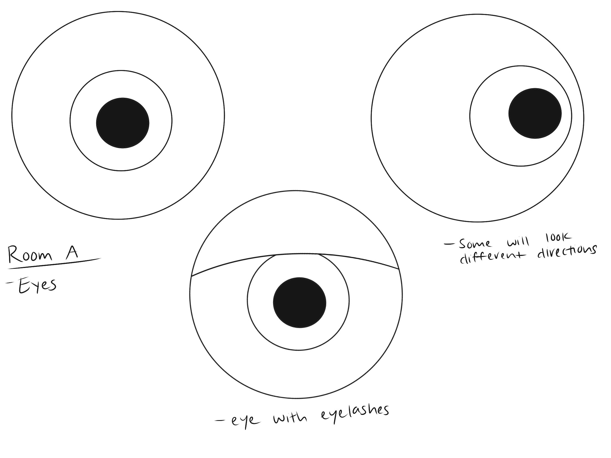
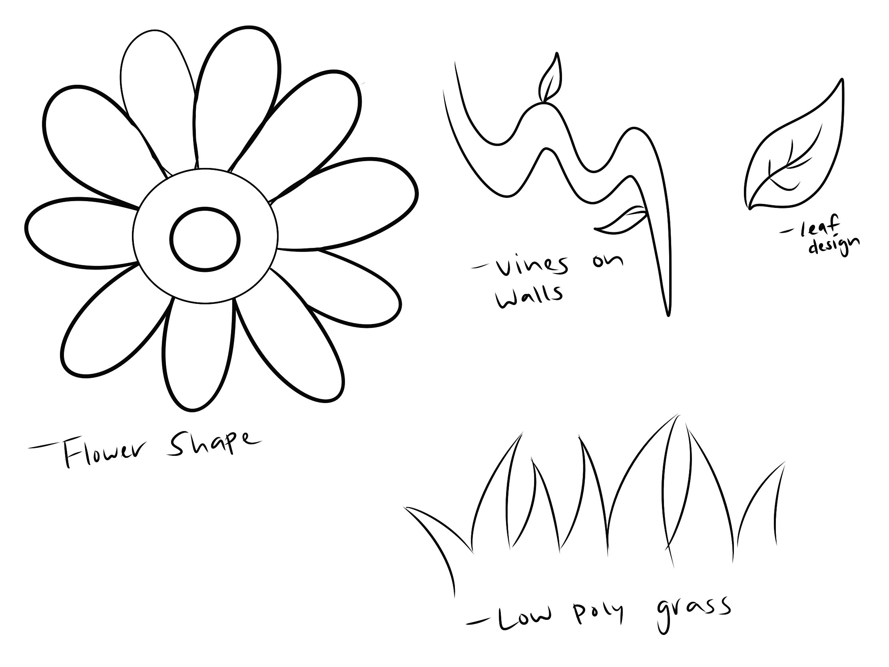
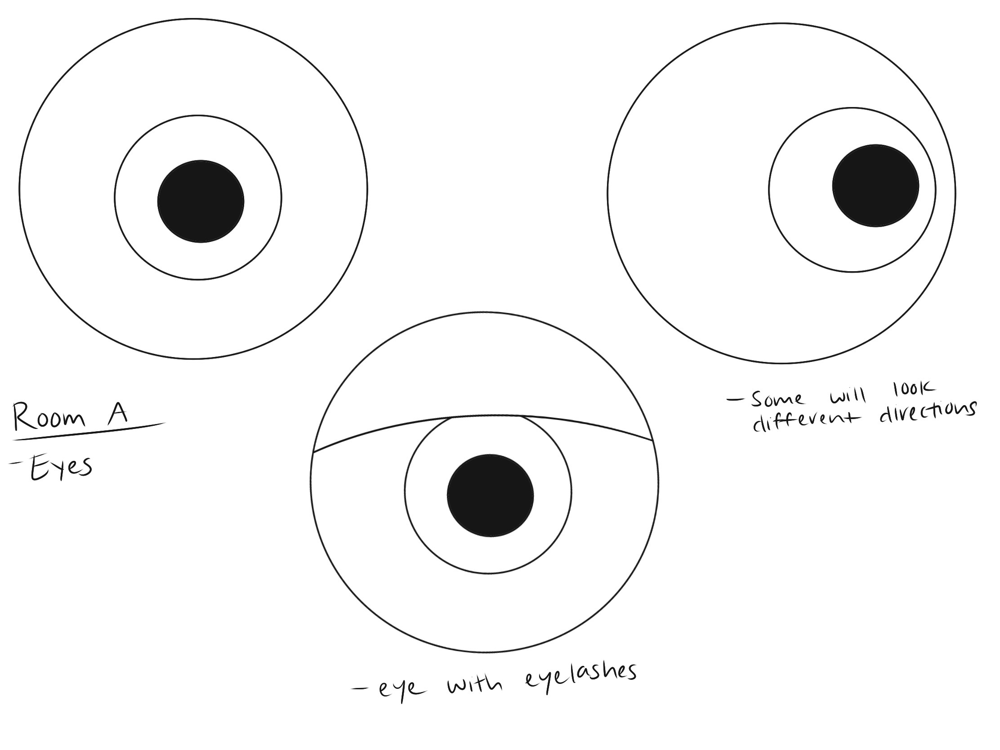
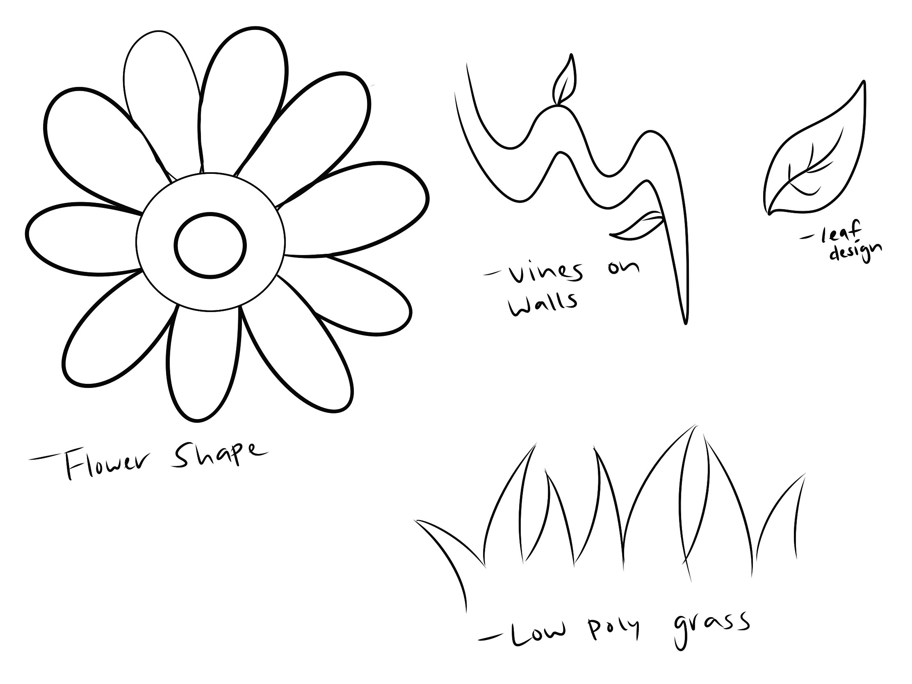

The journey is a project inspired by my personal journey as an artist. For the longest time I have struggled to find my voice as an artist and would often create work that I thought other people would like instead of creating work for myself. After finding my way I was inspired by how the road to self discovery is not as linear as one would hope. In life, we often struggle to find our calling and purpose. While the end goal of discovering who you are is the same for everyone, the road getting there is vastly different. Some individuals struggle all the way to the end, while others have an easier time and know who they wish to be. Some even give up and simply go with the flow of where life takes them. As humans, we often search for a place to belong and have a strong sense of self. Getting there can either be easy or difficult, The Journey brings those feelings and experiences to life through the use of symbolism. The Journey features different rooms and gives the viewer a choice to what path they wish to take. It is featured in New Art City and is constructed using the 3D modeling program Blender.
ARTIST BIO
Diana Dominguez practices a variety of different art techniques such as illustration art, creating 3D renderings, and photography. She constantly strives to learn more and creates artwork around the concepts that are meaningful to her personally. The most prominent being mental health and emotions. She has a strong interest in character design after working on two games as one of the leading artists. Diana considers herself to be a late bloomer. This is how the concept for The Journey project was developed. Diana has always watched everyone around her find their place and who they wanted to be, while she continued to struggle in finding her own voice and purpose. Everyone’s journey is different, but the end goal is more or less the same. The Journey brings those feelings to light.
 


